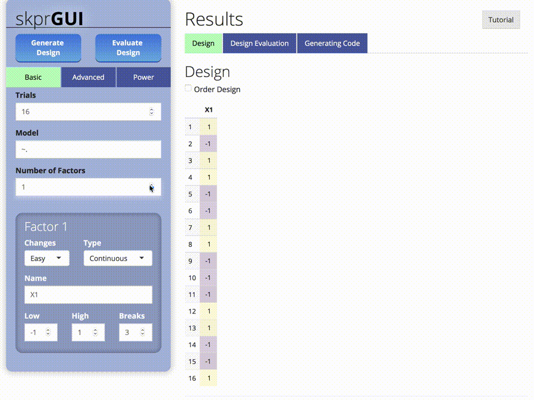
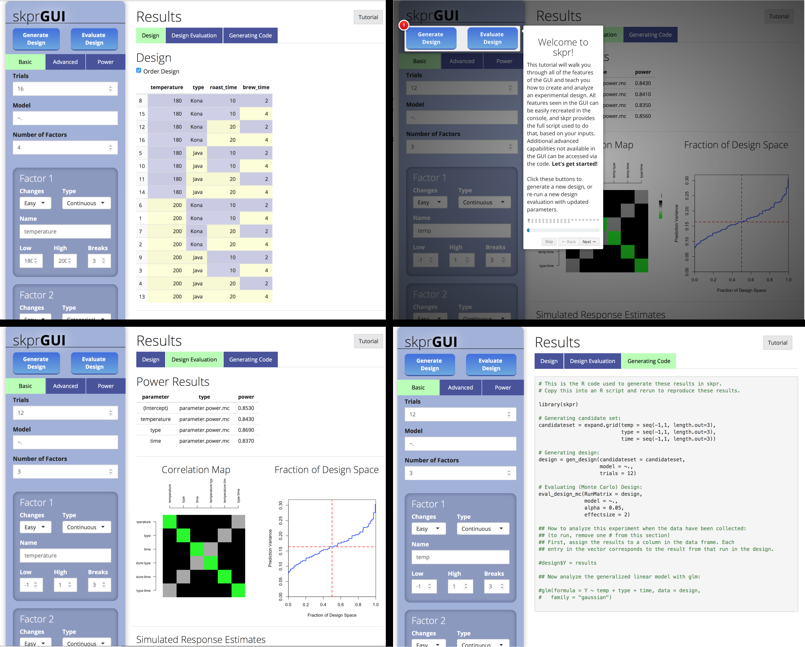

Overview
skpr is an open source design of experiments suite for generating and evaluating optimal designs in R. Here is a sampling of what skpr offers:
- Generates and evaluates D, I, A, Alias, E, T, and G optimal designs, as well as user-defined custom optimality criteria.
- Supports generation and evaluation of split/split-split/…/N-split plot designs.
- Includes parametric and Monte Carlo power evaluation functions, and supports calculating power for censored responses.
- Provides an extensible framework for the user to evaluate Monte Carlo power using their own libraries.
- Includes a Shiny graphical user interface, skprGUI, that auto-generates the R code used to create and evaluate the design to improve ease-of-use and enhance reproducibility.
Installation
# To install:
install.packages("skpr")
# To install the latest version from Github:
# install.packages("devtools")
devtools::install_github("tylermorganwall/skpr")Functions
-
gen_design()generates optimal designs from a candidate set, given a model and the desired number of runs. -
eval_design()evaluates power parametrically for linear models, for normal and split-plot designs. -
eval_design_mc()evaluates power with a Monte Carlo simulation, for linear and generalized linear models. This function also supports calculating power for split-plot designs using REML. -
eval_design_survival_mc()evaluates power with a Monte Carlo simulation, allowing the user to specify a point at which the data is censored. -
eval_design_custom_mc()allows the user to import their own libraries and use the Monte Carlo framework provided by skpr to calculate power. -
calculate_power_curves()provides an interface to automate the generation and evaluation of designs to create power versus sample size and effect size curves. -
skprGUI()opens up the GUI in either RStudio or an external browser.
If addition, the package offers two functions to generate common plots related to designs:
-
plot_correlations()generates a color map of correlations between variables. -
plot_fds()generates the fraction of design space plot for a given design.
##skprGUI
skprGUI() provides an graphical user interface to access all of the main features of skpr. An interactive tutorial is provided to familiarize the user with the available functionality. Type skprGUI() to begin. Screenshots:

Usage
library(skpr)
#Generate a candidate set of all potential design points to be considered in the experiment
#The hypothetical experiment is determining what affects the caffeine content in coffee
candidate_set = expand.grid(temp = c(80,90,100),
type = c("Kona","Java"),
beansize = c("Large","Medium","Small"))
candidate_set
#> temp type beansize
#> 1 80 Kona Large
#> 2 90 Kona Large
#> 3 100 Kona Large
#> 4 80 Java Large
#> 5 90 Java Large
#> 6 100 Java Large
#> 7 80 Kona Medium
#> 8 90 Kona Medium
#> 9 100 Kona Medium
#> 10 80 Java Medium
#> 11 90 Java Medium
#> 12 100 Java Medium
#> 13 80 Kona Small
#> 14 90 Kona Small
#> 15 100 Kona Small
#> 16 80 Java Small
#> 17 90 Java Small
#> 18 100 Java Small
#Generate the design (default D-optimal)
design = gen_design(candidateset = candidate_set,
model = ~temp + type + beansize,
trials=12)
design
#> temp type beansize
#> 1 80 Java Medium
#> 2 100 Java Large
#> 3 100 Java Small
#> 4 80 Java Large
#> 5 80 Kona Medium
#> 6 80 Kona Small
#> 7 100 Kona Small
#> 8 100 Kona Medium
#> 9 80 Kona Large
#> 10 100 Java Medium
#> 11 100 Kona Large
#> 12 80 Java Small
#Evaluate power for the design with an allowable type-I error of 5% (default)
eval_design(design)
#> parameter type power
#> 1 (Intercept) effect.power 0.8424665
#> 2 temp effect.power 0.8424665
#> 3 type effect.power 0.8424665
#> 4 beansize effect.power 0.5165386
#> 5 (Intercept) parameter.power 0.8424665
#> 6 temp parameter.power 0.8424665
#> 7 type1 parameter.power 0.8424665
#> 8 beansize1 parameter.power 0.5593966
#> 9 beansize2 parameter.power 0.5593966
#> ============Evaluation Info============
#> * Alpha = 0.05 * Trials = 12 * Blocked = FALSE
#> * Evaluating Model = ~temp + type + beansize
#> * Anticipated Coefficients = c(1, 1, 1, 1, -1)
#> * Contrasts = `contr.sum`
#> * Parameter Analysis Method = `lm(...)`
#> * Effect Analysis Method = `car::Anova(fit, type = "III")`
#Evaluate power for the design using a Monte Carlo simulation.
#Here, we set the effect size (here, the signal-to-noise ratio) to 1.5.
eval_design_mc(design, effectsize=1.5)
#> parameter type power
#> 1 (Intercept) effect.power.mc 0.600
#> 2 temp effect.power.mc 0.612
#> 3 type effect.power.mc 0.610
#> 4 beansize effect.power.mc 0.316
#> 5 (Intercept) parameter.power.mc 0.600
#> 6 temp parameter.power.mc 0.612
#> 7 type1 parameter.power.mc 0.610
#> 8 beansize1 parameter.power.mc 0.359
#> 9 beansize2 parameter.power.mc 0.354
#> ===========Evaluation Info============
#> * Alpha = 0.05 * Trials = 12 * Blocked = FALSE
#> * Evaluating Model = ~temp + type + beansize
#> * Anticipated Coefficients = c(0.750, 0.750, 0.750, 0.750, -0.750)
#> * Contrasts = `contr.sum`
#> * Parameter Analysis Method = `lm(...)`
#> * Effect Analysis Method = `car::Anova(fit, type = "III")`
#Evaluate power for the design using a Monte Carlo simulation, for a non-normal response.
#Here, we also increase the number of simululations to improve the precision of the results.
eval_design_mc(design, nsim=5000, glmfamily = "poisson", effectsize=c(2,6))
#> parameter type power
#> 1 (Intercept) effect.power.mc 0.9968
#> 2 temp effect.power.mc 0.9826
#> 3 type effect.power.mc 0.9832
#> 4 beansize effect.power.mc 0.8502
#> 5 (Intercept) parameter.power.mc 0.9968
#> 6 temp parameter.power.mc 0.9826
#> 7 type1 parameter.power.mc 0.9832
#> 8 beansize1 parameter.power.mc 0.8842
#> 9 beansize2 parameter.power.mc 0.7052
#> ============Evaluation Info============
#> * Alpha = 0.05 * Trials = 12 * Blocked = FALSE
#> * Evaluating Model = ~temp + type + beansize
#> * Anticipated Coefficients = c(1.242, 0.549, 0.549, 0.549, -0.549)
#> * Contrasts = `contr.sum`
#> * Parameter Analysis Method = `glm(..., family = "poisson")`
#> * Effect Analysis Method = `car::Anova(fit, type = "III")`
#skpr was designed to operate with the pipe (|>) in mind.
#Here is an example of an entire design of experiments analysis in three lines:
expand.grid(temp = c(80,90,100), type = c("Kona","Java"), beansize = c("Large","Medium","Small")) |>
gen_design(model = ~temp + type + beansize + beansize:type + I(temp^2), trials=24, optimality="I") |>
eval_design_mc(detailedoutput = TRUE)
#> parameter type power anticoef alpha glmfamily trials
#> 1 (Intercept) effect.power.mc 0.912 NA 0.05 gaussian 24
#> 2 temp effect.power.mc 0.927 NA 0.05 gaussian 24
#> 3 type effect.power.mc 0.997 NA 0.05 gaussian 24
#> 4 beansize effect.power.mc 0.935 NA 0.05 gaussian 24
#> 5 I(temp^2) effect.power.mc 0.637 NA 0.05 gaussian 24
#> 6 type:beansize effect.power.mc 0.913 NA 0.05 gaussian 24
#> 7 (Intercept) parameter.power.mc 0.912 1 0.05 gaussian 24
#> 8 temp parameter.power.mc 0.927 1 0.05 gaussian 24
#> 9 type1 parameter.power.mc 0.997 1 0.05 gaussian 24
#> 10 beansize1 parameter.power.mc 0.917 1 0.05 gaussian 24
#> 11 beansize2 parameter.power.mc 0.913 -1 0.05 gaussian 24
#> 12 I(temp^2) parameter.power.mc 0.637 1 0.05 gaussian 24
#> 13 type1:beansize1 parameter.power.mc 0.899 1 0.05 gaussian 24
#> 14 type1:beansize2 parameter.power.mc 0.902 -1 0.05 gaussian 24
#> nsim blocking error_adjusted_alpha power_lcb power_ucb
#> 1 1000 FALSE 0.05 0.8927052 0.9288249
#> 2 1000 FALSE 0.05 0.9090858 0.9423464
#> 3 1000 FALSE 0.05 0.9912580 0.9993809
#> 4 1000 FALSE 0.05 0.9178989 0.9494797
#> 5 1000 FALSE 0.05 0.6063275 0.6668632
#> 6 1000 FALSE 0.05 0.8937921 0.9297315
#> 7 1000 FALSE 0.05 0.8927052 0.9288249
#> 8 1000 FALSE 0.05 0.9090858 0.9423464
#> 9 1000 FALSE 0.05 0.9912580 0.9993809
#> 10 1000 FALSE 0.05 0.8981467 0.9333511
#> 11 1000 FALSE 0.05 0.8937921 0.9297315
#> 12 1000 FALSE 0.05 0.6063275 0.6668632
#> 13 1000 FALSE 0.05 0.8786332 0.9169799
#> 14 1000 FALSE 0.05 0.8818715 0.9197225
#> =========================================================Evaluation Info==========================================================
#> * Alpha = 0.05 * Trials = 24 * Blocked = FALSE
#> * Evaluating Model = ~temp + type + beansize + type:beansize + I(temp^2)
#> * Anticipated Coefficients = c(1, 1, 1, 1, -1, 1, 1, -1)
#> * Contrasts = `contr.sum`
#> * Parameter Analysis Method = `lm(...)`
#> * Effect Analysis Method = `car::Anova(fit, type = "III")`
#> * MC Power CI Confidence = 95%